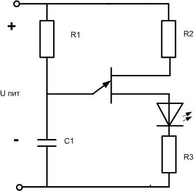
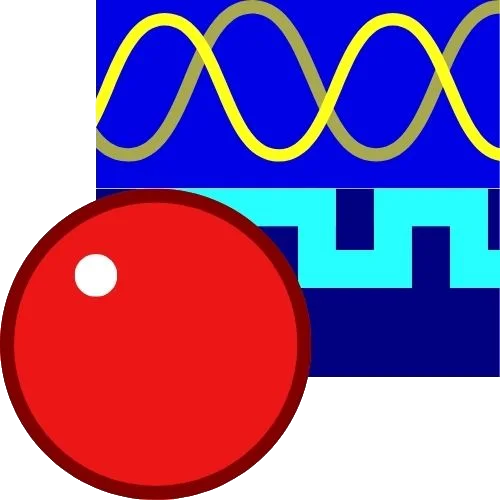
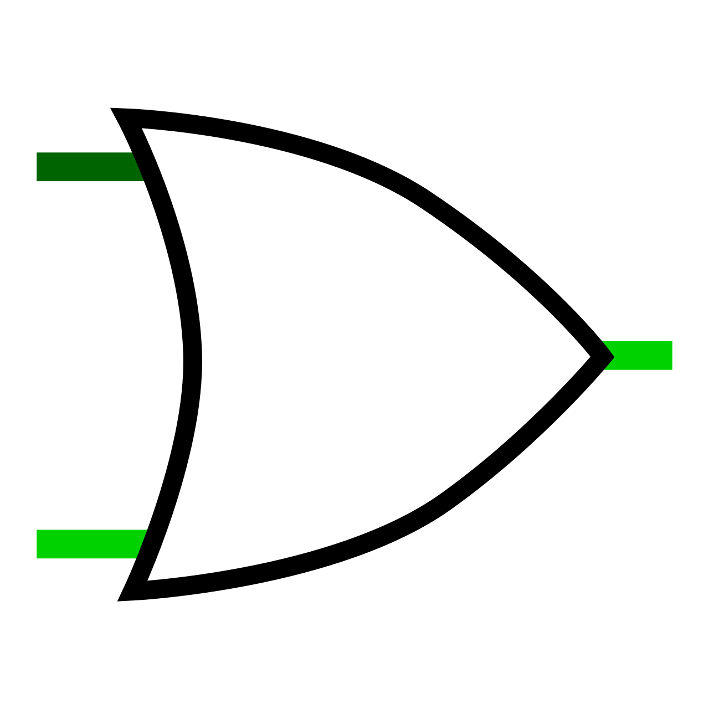
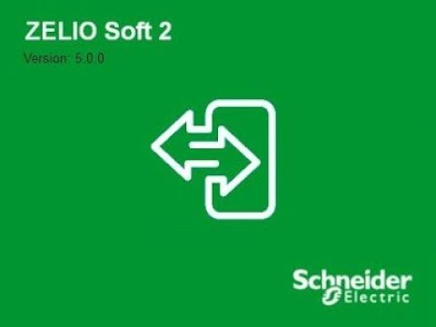

Tanulmányok
9–10. évfolyam
A 9–10. évfolyam alatt célom a szakmai alapismeretek megszerzése volt, amelyek alapot adnak a későbbi tanulmányokhoz és gyakorlati feladatokhoz. Ez idő alatt megismertem a digitális, villamos és gépészeti alapokat, valamint elsajátítottam a szakmai és üzleti ismereteket, amelyek felkészítettek a 10. év végén tett ágazati vizsga sikeres teljesítésére. A gyakorlati feladatok során fejlődött a problémamegoldó képességem és a precizitásom, ami alapot adott a későbbi ipari informatikai tanulmányokhoz.
1. Megszerzett alapismeretek
Digitális kultúra
A digitális kultúra órák során megismertem a számítógépek és az internet működését, a digitális írástudás alapjait, valamint a biztonságos online kommunikáció szabályait. Gyakorlatban készítettem dokumentumokat Word 2016-ban, táblázatokat Excelben és prezentációkat PowerPointban. Ezek a feladatok fejlesztették a logikus gondolkodásomat és a problémamegoldó képességemet, valamint biztos alapot adtak a későbbi projektekhez és a honlapkészítéshez.
Villamos alapismeretek
A villamos alapismeretek során megtanultam az elektromos alapfogalmakat, az áramkörök működését és a biztonságos munkavégzés szabályait. Gyakorlatban különböző áramköröket építettem, használtam alkatrészeket, mint dióda, ellenállás és LED. Tanultam az alapvető forrasztási technikákat, és mérőeszközökkel ellenőriztem az áramkörök működését. Ezek a tapasztalatok fejlesztették a precizitásomat és a kézügyességemet, valamint segítettek az elméleti tudás gyakorlati alkalmazásában

.png)
Gépészeti alapismeretek
A gépészeti alapismeretek órák során megismertem a mechanikai rendszerek működését és az alapvető szerkezeti elemeket. Gyakorlati feladatok során eszközöket használtam, mint reszelő, vasfűrész, fúrógép és csavarhúzó, valamint kisebb alkatrészeket szereltem össze. Megtanultam a műszaki rajzok készítését, olvasását és értelmezését, ami segített a mechanikai elemek helyes összeszerelésében és a problémamegoldásban.
2. Szakmai és üzleti alapok
Munkavállalói ismeretek
A munkavállalói ismeretek órákon megtanultam a munka világának alapvető szabályait, az álláskeresés és az önéletrajz készítésének módját, valamint a motivációs levél és az állásinterjú alapjait. Gyakorlati feladatok során csoportos munkát végeztünk, amelyek fejlesztették a kommunikációs és szervezési készségeimet, valamint a felelősségvállalást.
Pénzügyi és vállalkozói ismeretek
A pénzügyi és vállalkozói ismeretek órák során alapvető gazdasági fogalmakat, költségvetés-készítést és üzleti döntések alapjait sajátítottam el. Gyakorlati feladatokban kis üzleti szimulációkban vettem részt, amelyek fejlesztették a tervezési és problémamegoldó képességeimet, valamint a stratégiai gondolkodást
Ágazati vizsga
A 10. év végén sikeresen teljesítettem az ágazati vizsgát, amely során bizonyítottam a megszerzett alapismereteket és a szakmai kompetenciáimat a villamos és gépészeti alapok területén.
Elméleti tudásomat a gépészet és elektronika alapjairól kellett bemutatnom, például műszaki rajzok készítésében, gépészettel és elektronikával kapcsolatos kérdések megválaszolásával és egyszerű áramköri számítások megoldásával.
Elkészítettem egy mechanikus és villamos elemekből álló alkatrészcsoport egyes elemeit, valamint gondoskodtam azok precíz előállításáról és összeszereléséről a végső működő egység kialakítása érdekében.
11. évfolyam
A 11. évfolyamon a korábban megszerzett alapok után a tanulmányaim már kifejezetten az elektronikai, elektrotechnikai és informatikai rendszerek mélyebb megismerésére irányultak. Ebben az évben nagyobb hangsúlyt kapott az áramkörök működésének részletesebb tanulmányozása, valamint a programozási és digitális rendszerek alapjainak elsajátítása. A tantárgyak során az elméleti ismeretek mellett számos gyakorlati feladatot is végeztem, amelyek segítettek jobban megérteni a különböző elektronikai és digitális rendszerek működését.
Megszerzett ismeretek
Programozás alapjai
A programozás alapjai tantárgy során megismerkedtem az algoritmikus gondolkodás és a programozási logika alapjaival. Az órákon megtanultam, hogyan lehet egy problémát kisebb lépésekre bontani, majd azt egy program segítségével megoldani. Foglalkoztunk az alapvető programozási szerkezetekkel, például a változókkal, elágazásokkal és ciklusokkal, valamint az algoritmusok felépítésével.
A gyakorlati feladatok során különböző egyszerű programokat készítettem, a melyek segítségével gyakoroltam a logikai gondolkodást és a hibakeresést. A programok írásához a Visual Studio Code fejlesztői környezetet használtuk, a mely egy modern kódszerkesztő. Ebben a programban írtam és futtattam a kódokat, valamint megtanultam a programok strukturált felépítését és a hibák javításának alapvető módszereit.

A feladatok során különböző alapvető programozási problémákat oldottunk meg, például számítási feladatokat, feltételek vizsgálatát vagy ismétlődő műveletek végrehajtását. Ezek a gyakorlatok segítettek abban, hogy fejlődjön a logikai gondolkodásom és jobban megértsem a programozás működésének alapelveit.
Automatika és elektronikai ismeretek
Az automatika és elektronikai ismeretek órákon megismertem az elektronikai rendszerek működésének alapelveit
és az automatizált rendszerekben használt alapvető elektronikai elemek szerepét. Tanultunk különböző elektronikai alkatrészekről,
például ellenállásokról, diódákról, kondenzátorokról és tranzisztorokról, valamint ezek működéséről az áramkörökben.
A gyakorlati feladatok során különböző egyszerű áramköröket építettünk és elemeztünk,
valamint számítógépes szimulációs programok segítségével vizsgáltuk az áramkörök működését. Ezek a gyakorlatok segítettek jobban megérteni,
hogyan működnek az elektronikai rendszerek a valóságban.
Analóg áramkörök
Az analóg áramkörök tantárgy során az analóg elektronika alapelveit tanultam. Megismertem az olyan alapvető alkatrészek működését, mint az ellenállások, kondenzátorok és diódák, valamint ezek szerepét az áramkörökben. Tanultunk az Ohm-törvényről, a feszültség- és áramviszonyokról, valamint egyszerűbb áramköri számításokról.
A gyakorlati feladatok során az Electronic Workbench (EWB) 5.12 programot használtuk, amely egy elektronikai áramkör szimulációs szoftver. Ennek segítségével különböző analóg kapcsolásokat építettem fel virtuális környezetben, majd megfigyeltem azok működését. A programban mérőműszereket is használhattunk, például virtuális multimétert és oszcilloszkópot, amelyekkel ellenőrizni lehetett a feszültség- és áramértékeket az áramkör különböző pontjain.

Digitális áramkörök
A digitális áramkörök tantárgy során a digitális elektronika alapjaival foglalkoztunk. Megtanultam a bináris számrendszer használatát, valamint a logikai műveletek és logikai kapuk működését. Tanulmányoztuk az alapvető logikai kapukat, például az AND, OR, NOT, NAND és NOR kapukat, valamint ezek működését különböző kapcsolásokban.

A gyakorlati feladatok során a Logisim nevű digitális áramkör szimulációs programot használtuk. Ebben a programban különböző digitális áramköröket építettem fel logikai kapuk segítségével, majd teszteltem azok működését. A feladatok során egyszerű logikai hálózatokat és kombinációs áramköröket készítettünk, amelyek segítettek megérteni a digitális rendszerek működésének alapjait.
Elektrotechnika
Az elektrotechnika tantárgy során tovább mélyítettem a villamos alapismereteimet.
Tanultam az elektromos áramkörök működéséről, a feszültség, az áramerősség és az ellenállás közötti összefüggésekről,
valamint különböző áramköri számításokról.
Az órák során foglalkoztunk az Ohm-törvénnyel a soros és párhuzamos kapcsolásokban,
valamint az ellenállások eredő értékének kiszámításával. Ezek az ismeretek segítettek abban,
hogy jobban megértsem az elektronikai áramkörök működését.
A gyakorlati feladatok során különböző áramköröket elemeztünk, számításokat végeztünk,
és a korábban tanult elektronikai ismereteket alkalmaztuk. Ezek a feladatok fejlesztették a műszaki gondolkodásomat és a problémamegoldó képességemet.
12. évfolyam
A 12. évfolyam során a tanulmányaim a korábbi években megszerzett alapokra épültek, és a hangsúly már a komplex ipari informatikai rendszerek működésének megértésére helyeződött. Ebben az évben kiemelt szerepet kaptak a számítógépes szimulációk, az adatbázis-kezelés, a számítógépes hálózatok, valamint a mikrokontrollerek és a PLC-k programozása. A tantárgyak során az elméleti ismereteket mindig gyakorlati feladatokon keresztül alkalmaztuk, így a problémamegoldó képességem, a precizitásom és a rendszerszemléletem folyamatosan fejlődött, és egyre magabiztosabban tudtam kezelni valós ipari rendszereket.
Megszerzett ismeretek
Számítógépes szimuláció
Itt az ipari rendszerek modellezését és működésük előrejelzését tanultuk számítógépes környezetben. A gyakorlatok során az Autodesk Eagle programot használtuk elektronikai áramkörök tervezésére, NYÁK-tervek készítésére és az áramkörök működésének ellenőrzésére.
A programban alkatrészeket helyeztem el, virtuális áramköröket építettem és szimuláltam, majd figyeltem a különböző jelek viselkedését az áramkörben. A feladatok során megtanultam a kapcsolások logikai felépítését, a tervezés és a hibakeresés folyamatát, valamint azt, hogy a szimuláció segít az esetleges hibák korai felismerésében, még a valós megvalósítás előtt.

Mikrovezérlő programozása
A mikrovezérlő programozás során az alapvető mikrokontrolleres rendszerek működését tanultuk. A gyakorlatokban a mikrokontrollerre egyszerű programokat írtam, amelyekkel például LED-eket, szenzorokat és motorokat irányítottam. A feladatok során a Zelio Soft 2 programot használtuk, amelyben a FBD (Function Block Diagram) és Ladder programozási nyelveken készítettünk vezérlőprogramokat. A gyakorlati feladatok segítettek megérteni a szenzorok és beavatkozók működését, valamint a vezérlési logikák felépítését.
PLC programozás
A PLC programozás órák során a programozható logikai vezérlők alkalmazását és működését tanultam. A gyakorlatokon Ladder és FBD diagramokon keresztül automatizáltam egyszerű ipari folyamatokat, például motorok és lámpák vezérlését, valamint logikai kapcsolások és vezérlési sorrendek szimulációját végeztem. A feladatok során a valós be- és kimeneti jeleket használtuk, így megtanultam a rendszerek működésének gyakorlati ellenőrzését, a hibakeresést, valamint a programok pontos működtetését.
Adatbázis-kezelés alapjai
Az adatbázis-kezelés alapjai tantárgy során az adatok szervezett tárolásával, kezelésével és lekérdezésével foglalkoztunk. Az órákon az adatmodellezés, a táblák létrehozása, a relációk kialakítása és az SQL alapú lekérdezések készítése volt a központi téma. Gyakorlati feladatok során adatbázisokat készítettem, például egy kis vállalkozás termékeinek és rendeléseinek nyilvántartására, lekérdezéseket írtam adatok szűrésére, összesítésére, és jelentéseket készítettem, amelyek vizualizálták az adatkapcsolatokat.

Hálózatkezelés
A hálózatkezelés órák során a számítógépes hálózatok működésével és szerepével ismerkedtünk. Az órákon áttekintettük, hogy a hálózatok hogyan kapcsolják össze a számítógépeket és eszközöket, hogyan történik az információ továbbítása, és miért fontosak az ipari és irodai rendszerekben. Ezek az órák segítettek megérteni a hálózatok alapvető működését és jelentőségét a mai digitális környezetben.
13. évfolyam
Programozási alapok és webfejlesztés kezdete.